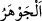
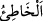
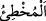
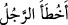
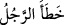

geçmiş olan “__WORD__ kelimesi de bunun gibidir.
İbn Atıyye: “Bir şey ancak yasaklandıktan sonra yapılırsa ona hata denir.” demiştir.
Hata bir yönden dönmek/sapmak demektir. “__WORD__ ile “__WORD__ arasında fark vardır. Bir
suçu bile bile işleyene “__WORD__, bilmeden işleyene ise “__WORD__ denir. Kişi sözünde ve
işinde sürçtüğünde/hata ve yanlış yaptığında “__WORD__ denir. Dinde ve amelde hata
ettiği zaman ise “__WORD__ denir. “Onu (bile bile) hata işleyenlerden başkası yemez”
(el-Hâkka, 69/37) âyeti de bu kabildendir.
“Fakat kalblerinizin bile bile yöneldiğinde günâh vardır.” Fakat vebal/günah, bu
yasaklamadan sonra kalblerinizin kasdettiğindedir ya da kendisinde vebal/günah olanı
kalblerinizin kasdettiğinde günah vardır. Bir hadîste “Babası olmadığını bile bile
başkasının babası olduğunu iddiâ eden kimseye cennet haramdır.”[162] buyrulmuştur.
“Allah bağışlayandır, esirgeyendir.” Mağfireti ve rahmeti boldur. Hata yapan
kimseyi bağışlar ve ona merhamet eder.
Hz. Ömer (r.a.) bir adamın: “Allahım! Benim hatalarımı bağışla!” dediğini işitti ve:
“Ey Ademoğlu! Sen kasden işlediğin günahların bağışlanmasını dile, hata yoluyla
işlediğin günahları Allah zaten bağışlar.” dedi.
Fakir (Bursevî) der ki: Bu durum âyetle çelişmez. Çünkü hata işleyen kimse ihmalkar
davrandığı ve kendisini hataya götüren sebeplere kapıldığı zaman bağışlanacağı
zannolunur ve rahmete ereceği umulur.
Sonra “O benim oğlumdur.” sözüyle evlâdlık edinilen kişi, nesebi meçhul ve evlâdlık
edinen kimseden de yaşça küçükse nesebinin ondan olduğu sâbit olur. Eğer bu sözü
söyleyenin kölesiyse nesebin sâbit olmasının yanında hür olur. Şâyet bu evlâdlık o
kimsenin evlâdı olamayacak yaşta olursa, Ebû Hanîfe’ye göre nesebi sâbit olmaz, fakat
âzâd olur. İmâmeyn ise farklı görüştedir. Zîrâ onlara göre o kimse âzâd olmaz. Çünkü
onun sözü muhal/imkansız ve geçersizdir. Nesebi bilinip tanınan kimsenin ise evlâdlık
edinmekle nesebi sâbit olmaz. Şâyet bu kişi köle ise âzâd olur.
Bilesin ki kişinin evlâdlığının nesebini reddetmesinden bir şey lâzım gelmez. Çünkü o
zaten onun gerçek oğlu değildir. Ancak kişi kendi sulbünden olduğu sâbit olan evlâdının
nesebini reddederse bu durumda lian gerekir. Çünkü bu durumda o kimse nikâhlı
hanımına zinâ suçu isnad etmiş olur. Eğer bu hususta kendisini yalanlar/yalan
söylediğini kabul ederse o kimseye had (kazf/iftirâ) cezâsı uygulanır. Liân/mülâane
fıkhın konularından birisidir. Bu konu için fıkıh kitaplarına bakılabilir.[163]
Sonra şunu da bil ki hakîkî neseb Hz. Peygamber (s.a.)’e nisbet edilen nesebdir.
Çünkü kalıcı olan neseb o nesebdir. Nitekim Efendimiz (s.a.): “Benim haseb ve
nesebim dışında bütün haseb ve nesebler sona erer.”[164] buyurmuştur. O’nun hasebi
fakr, nesebi ise nübüvvettir. Onun için O’nun sünnetlerini ve siyretini terk ederek
nübüvvetten akrabalık bağını kesmemelidir. Çünkü hakîkî akrabalık bağını kesmek,
günah bakımından mecâzî akrabalık bağını kesmenin üzerindedir. Çünkü mecâzî